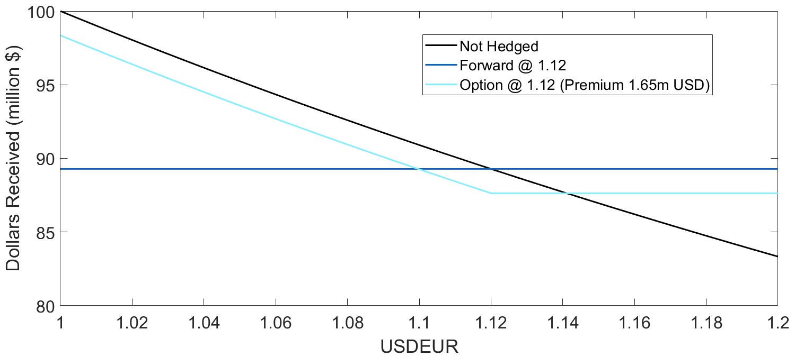

Airlines have costs and revenues in all sorts of curencies and so they have exposure to FX risk. Typically most airline costs are in USD, such as fuel an leasing costs. The significant strengthening of the dollar in 2022 of around 10-15% was felt brutally by airlines because their USD denominated costs rose. Vietnam airlines lost $430mn in 2022 blaming fuel prices and FX volatility. FX has 3 key impacts on airlines...
- 1. Passenger demand composition
i.e. if the pound is weak relative to the dollar (GDPUSD low) then trips to the UK are cheaper for Americans and vice-versa. There is likely an increase in traffic from Americans to UK - 2. Flight prices and Flight services
Airlines will shift flight prices and cancel flights to re-balance supply and demand. In the longer term, they may need to re-consider flight routes and volumes though future decisions are heavily dependent on forecasted passenger demand - 3. Profitability and Balance Sheet Valuations
Most non-US airlines must convert additional money to USD to cover their costs. If USD strengthens then their costs tend to go up and vice versa. US based airlines may have excess USD to cover their costs and a strengthening USD is a bonus
A good report on FX risk to airlines can be found here
So what do Airlines do?
They hedge their currency risk with derivative products such as forwards and options.For example, an airline expects they will need to convert EUR 100m to USD in 3 years. The current exchange rate of USDEUR is 1.075 (1 dollar = 1.075 euros). However the airline worries that the dollar may strengthen relative to the Euro...
The airline can buy a 3Y forward at 1.12: in 3 years they will definitely receive $89.3m
OR
The airline can buy a 3Y expiry option with a strike price of 1.12, at a premium of $1.65m. In 3 years, the airline will exercise this option if USDEUR is below 1.12, or they can let the option expire and receive $87.65m.
These 2 strategies and their outcomes are illustrated on the graph below.
Dollars reveived depending on the exchange rate in 3 years, with no hedging, forward, put option.
Case Study: Pakistan Foreign Reserves
In June 2023, Pakistans foreign reserves (SBP) fell to a low of $4.4bn - only enough to cover a month of imports. The central bank would be risking currency stability and their ability to import goods if they were to send dollars out the country.
Hence, international companies including airlines have struggled to repatriate dollars. Pakistan owed airlines $399mn as of April 2024. This was the second largest of any country, to Nigeria. Some airlines still had funds stuck in Pakistan from 2022 sales. The Internationsal Air Transport Association (IATA) demanded that their revenues were released so that airlines could cover their dollar denominated costs, highlighting that airlines operate on 'razor thin margins'.
In February 2023, Virgin Atlantic Airlines suspended services to Pakistan due to repatriation issues and economic viability.
As of now (Jun 2024), SBP reserves are up to $14.38bn. Pakistan's debt to GDP ratio is 70% and interest payments soak up a large fraction of their revenues as shown below. A $3bn Stand By Arrangement () was made with the IMF in Jun 23' to help bring the reserves up. The SBP restricted imports and repatriation of dollars. Remittances massively increased in early 2024 which also helped increase their reserves.

Case Study: Nigeria
As of June 2023, Nigeria had blocked $850mn of airlines revenues. Many airlines had reduced operations, with Emirates fully suspending flights to Nigeria in 2022 due to the substantial amounts they were owed in ticket revenus. Emirates have now resumed these flights in 2024 as Recently, 98% of this amount was cleared. The table below shows the 8 countries responsible for 87% of the global trapped airline funds, which sits at $1.6bn [data from IATA].
| Country | Amount (million USD) | Months Held |
|---|---|---|
| Pakistan | 411 | 40 |
| Bangladesh | 320 | 40 |
| Algeria | 286 | 37 |
| XAF Zone | 151 | 50 |
| Ethiopia | 149 | 58 |
| Lebanon | 129 | 52 |
| Eritrea | 75 | 116 |
| Zimbabwe | 69 | 84 |